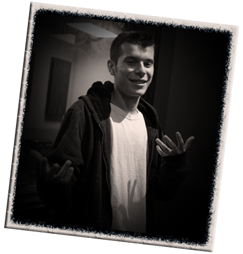

Brandon Dominguez is a very passionate and hardworking Artist and Engineer fresh on the scene.
He can record, mix, and master audio for all music genres. Additionally, Brandon is fluent with
DAWs such as Logic Pro, Protools, and Cubase. If you have a studio, he can come to you or utilize
his knowledge and equipment at Scary Room Studios if need be. For now, SRS is a studio
with high quality sound located in Cameron Park, California. Overall, Scary Room Studios is a
great place for new artists and seasoned veterans alike to record to their heart's content.